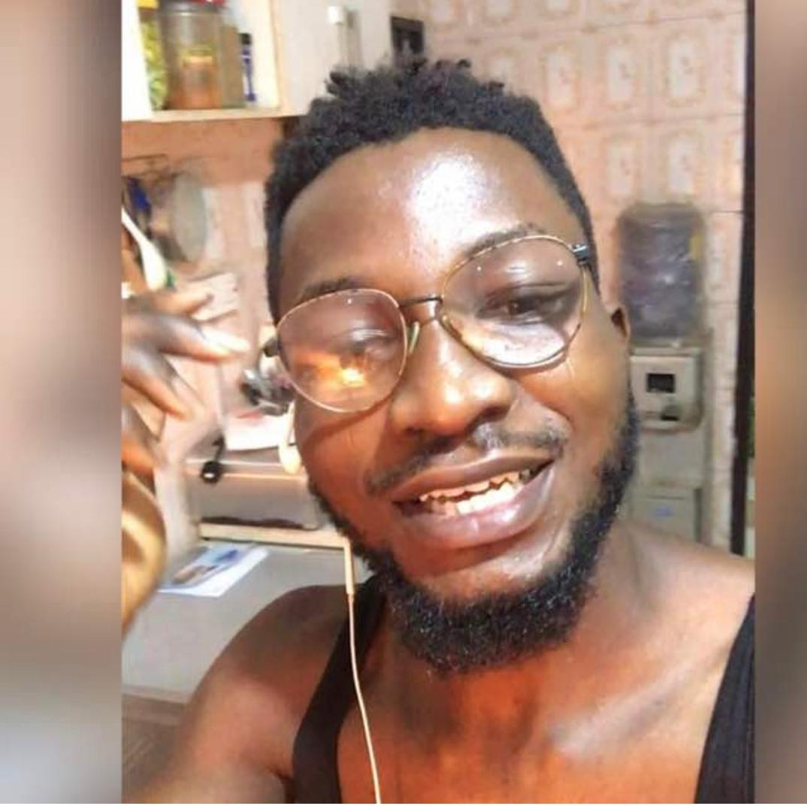

|  | Balogun Olalekamjunior full stack developer Lagos State |
i am a graduate of mass communication and media, with lower credit
in higher national diploma (HND). i am a junior full stack developer and UXdesigner
. i have worked with
individuals and corporate web development projects.i am a tech enthuiast
and my motivationis to provide value and solve complex web problems.
contact page: |
link. | competence: |